Verkkokauppa
html_css_basics
|
├── exercises
│ ├── ...
│ └── e7
│ ├── style.css
│ ├── index.html
│ ├── (kopio etusivusta)
│ ├── (kopio etusivusta)
│ ├── (kopio etusivusta)
| └── img
│ ├── covers-01.jpg
│ ├── covers-02.jpg
│ ├── ...
|
Layout
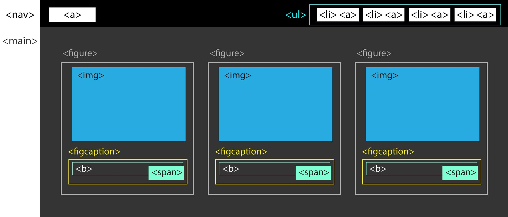
Tehtävä
ⓘ Toteuta alla olevien ohjeiden mukaisesti ensin pelkästään index.html style.css ja testaa sivun toimivuus ennen kuin teet alisivuja tuotekategorioille
- Malli valmiista sivusta dokumentin lopussa.
- Voit käyttää harjoituksessa mitä tahansa ilmaisia 400 x 300px tuotekuvia ja keksiä tuotteita itse lisää.
- Alla mallin kuvat. Vedä työpöydälle tai paina oikealla 'Tallenna kuva nimellä', niin saat täysikokoisen kuvan.
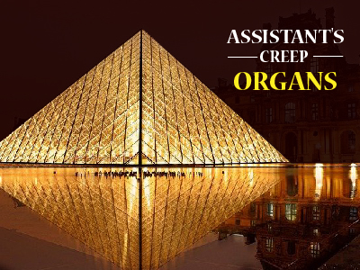
 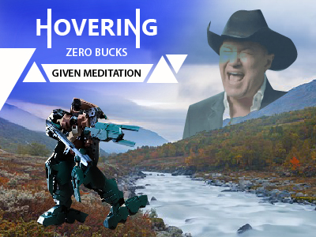
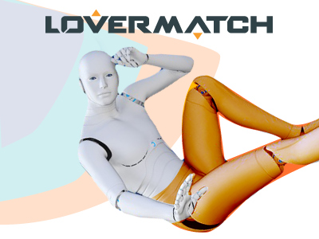
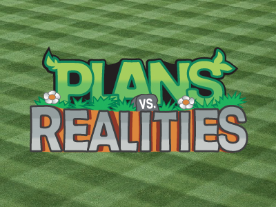
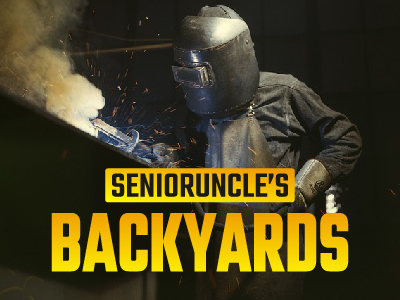
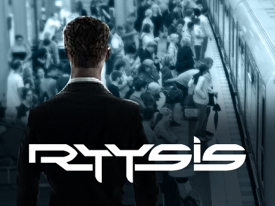
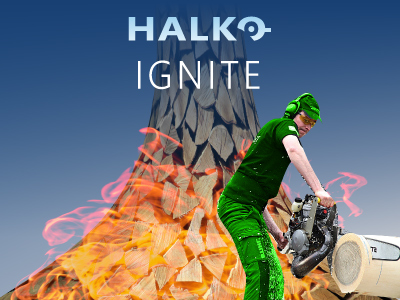
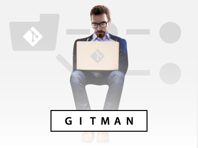
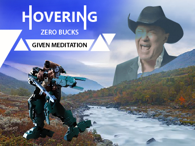
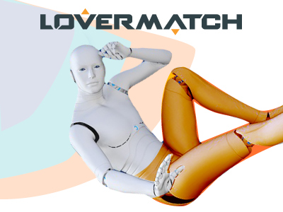
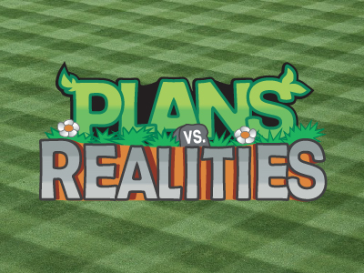
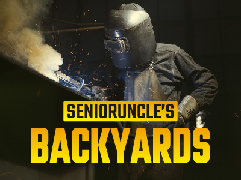
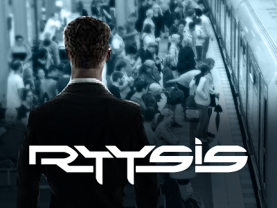
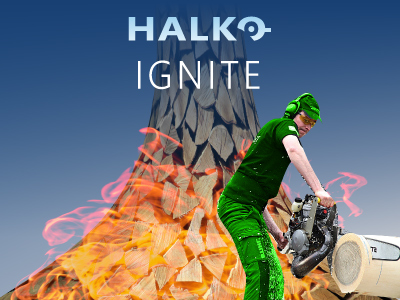
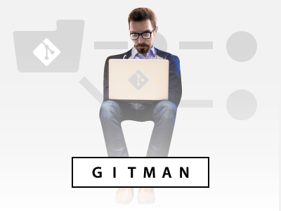
1. HTML
- Toteuta verkkokaupalle html-sivupohja
- Tee index.html ja style.css tiedostot ja linkitä style.css headiin
- Vaihda kaupan nimi titleen
- Lisää kaikki tuotekuvat, tuotteiden nimet ja hinnat sivulle layout-suunnitelman mukaisella rakenteella
- figure, jonka sisällä on img ja figcaption
- figcaptionin sisällä on b ja span
- b tagin sisälle tulee tuotteen nimi
- span tagin sisälle tuotteen hinta
- Toteuta navigaatio layout-suunnitelma mukaisella rakenteella
- nav jonka sisällä on ul-tagin lisäksi yksittäinen a tagi, johon tulee kaupan nimi
- ul listaelementin sisällä on useita li (list item) elementtejä, joissa kaikissa on a (anchor) linkkitagi
- Linkitä navigaation a-tagit html-tiedostoihin, jotka teet kohta kopioimalla index.html-sivua
- index.html on pääsivu, joka näyttää kaikki kaupan tuotteet
- Tee kategorioita kuvaavat linkit, riippuen mitä kaupassasi myydään
- esim. index.html, action.html, adventure.html, multiplayer.html
<a href="index.html" class="active">Kaikki</a>
<a href="action.html">Toiminta</a>
...
2. CSS
body
- Muotoile sivuston ulkoasu vastaamaan designia
- Valitse Google-fonts -palvelusta sopiva fontti ja käytä @import url(...) css:n ensimmäisellä rivillä
- Vaihda taustaväri (voit tehdä tumman tai vaalean teeman kaupalle)
- Poista oletusmarginaalit
main
- Tee mainista flex-elementti (display: flex;)
- Ota flexin automaattinen uudelleenrivitys käyttöön (flex-wrap: wrap;)
- Keskitä flex-elementin sisältö (justify-content: center;)
- Lisää ylämarginaalia 50px, jotta sisältö ei piiloudu navigaation alle myöhemmin
figcaption
- Aseta sopiva väri figcaptionin sisällä oleville teksteille
- Jos käytit b-tagia niin teksti on lihavoitu
figcaption span
- Kelluta span elementti oikealle (float: right;)
- Aseta spanille taustaväri ja siitä erottuva tekstin väri
- Lisää paddingia joka puolelle
nav
- Tee navigaatiosta flex-elementti
- Aseta sen leveydeksi 100%
- Lisää (position: fixed; top: 0;) jotta navigaatio pysyy aina sivun yläreunassa
- Vaihda navigaation taustaväri erottuvaksi bodyn taustaväristä
- Asettele ul ja yksittäinen a tagi navigaation vastakkaisiin päätyihin (justify-content: space-between;)
nav ul
- Poista listan bulletit
- Tee listasta flex-elementti
- Poista marginaalit ja paddingit
nav a
- Lisää padding linkkielementeille (a)
- Vaihda linkkien väri
- Poista linkkien alleviivaus
- Lisää css-pseudo hover, jolla vaihdat linkin värin, kun hiiri on linkin päällä
- Lisää css-pseudo visited, jolla vaihdat jo vieraillun linkin värin
.active
- Tee ylimääräinen css luokka, joka palauttaa alleviivauksen linkeille, joille on erikseen annettu class="active"
- Voit myös vaihtaa linkin väriä, jollet halua alleviivausta
'
- Poista aktiivisen linkin klikattavuus ja hover-efekti lisäämällä (pointer-events: none;)
3. Kasaus
- Kun olet saanut index.html toimimaan tyyleineen...
- Tee 3 kopiota index.html sivusta ja vaihda niiden nimet vastaamaan navigaatiossa linkitettyjä tiedostoja
- Jos käyttäjä on sivulla action.html, niin silloin 'Toiminta'-linkillä tulee olla luokka 'active'
- Vaihda siis navigaation a-tagin class="active" vastaamaan avoinna olevaa sivua
- Säilytä kaikki tuotteet index.html sivulla, mutta poista kategoriaan kuulumattomat tuotteet muilta alisivuilta
- Tallenna muutokset GitHubiin ja päivitä etusivuasi, jossa tehdyt demot ja harjoitukset on listattu
html_css_basics
|
├── exercises
│ ├── ...
│ └── e7
│ ├── style.css
│ ├── index.html
│ ├── action.html
│ ├── adventure.html
│ ├── multiplayer.html
| └── img
│ ├── covers-01.jpg
│ ├── covers-02.jpg
│ ├── ...
|
Malli (index.html)
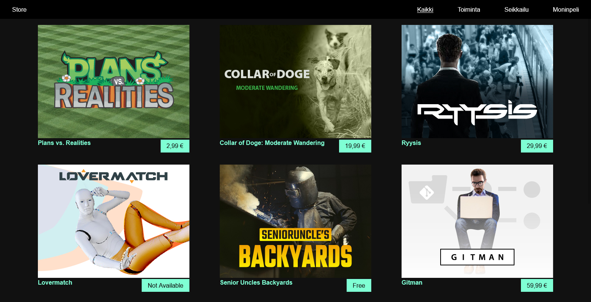
Malli (adventure.html)
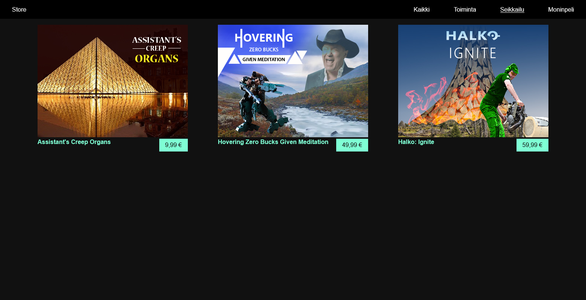